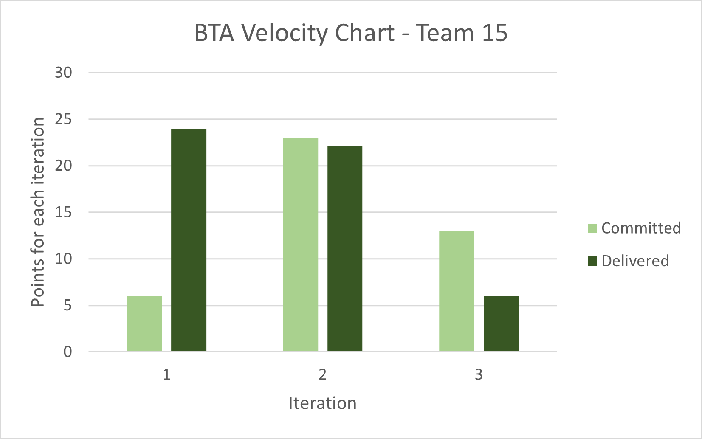

VELOCITY CHART
In iteration 1, we had under estimated the learning curve of Android Studio and Git, which led to most of the iteration
being spent on learning how to use both tools mostly from scratch. In the end we had to move over low and medium priority tasks
to iteration 2.
Iteration 2 went by a lot smoother as we now had a better idea of how to approach the rest of the project and how to
divide tasks up to try to optimize the time as much as we could. We even managed to finish everything on time as we planned.
For iteration 3, we were left only with the low and medium priority tasks that we were unable to get to in previous iterations.
We completed a couple of the user stories, but decided to leave the rest for a future iteration.
